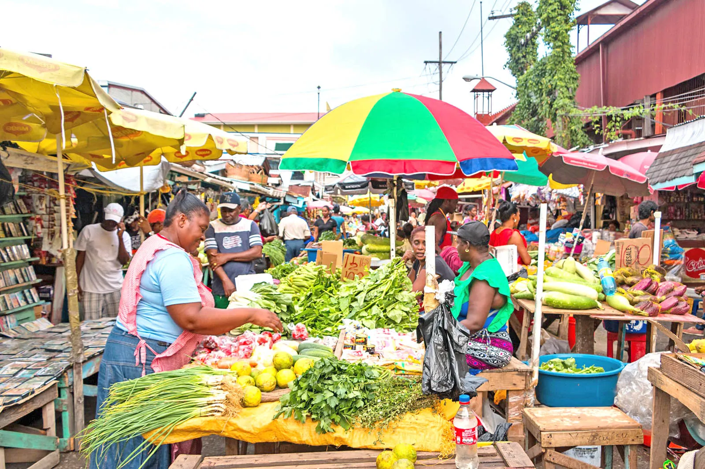

RouteWise Guyana
RouteWise Guyana
Everything you need to know before you board

Minibuses in Guyana operate on numbered routes radiating from main terminals at Stabroek Market. Each route has a fixed number and a general corridor: East Coast, East Bank, West Coast, or Linden Highway.
Fares are regulated by the government and vary by distance. Typical fares range from GYD $100 for short Georgetown trips to GYD $500+ for longer routes. Always know your estimated fare before boarding.
Buses depart from designated bus parks at Stabroek Market. Along routes, they also pick up passengers at informal stops. Look for clusters of people waiting at roadsides. Wave to flag the bus down.
Fares are regulated. If a driver charges above the listed amount, you have grounds to dispute it. Use our feedback form to report overcharging. Your report helps keep fares fair for all commuters.
Use the search bar on the home page. Enter your starting point or destination, try "Stabroek" or "Turkeyen", and matching routes will appear instantly.
Click any route card to open its detail page. You'll see every stop along the route, key landmarks nearby, and an interactive map showing the full path.
The estimated fare range is shown clearly on every route. Remember these are estimates. Always verify with the conductor, and report it if you're charged more than the regulated amount.